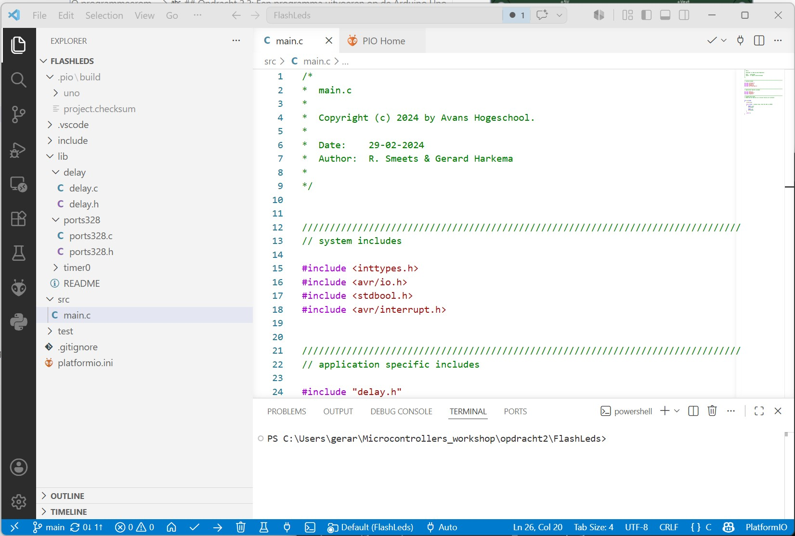

Opdracht 2: Kennismaken met de Arduino Uno en PlatformIO
In deze opdracht maak je kennis met de Arduino Uno en de bijbehorende programmeeromgeving PlatformIO. Je leert hoe je een programma schrijft in C, hoe je dit programma compileert en flasht naar de Arduino Uno, en hoe je de LED’s en schakelaars op het LED/switch-shield aanstuurt en uitleest.
Notitie
Tijdens de uitvoering van deze opdracht houd je een rapportage bij. Gebruik hiervoor het document Rapportage_Opdracht_2.docx in de map opdracht2 van de microcontrollers workshop. Dit bestand lever je in op Brightspace.
Opdracht 2.1: Installatie van Visual Studio Code en PlatformIO
Notitie
Deze opdracht voer je in je eigen tijd uit, voordat je met het practicum begint. Als je de software nog niet hebt geinstalleerd, heb je geen toegang tot het practicum.
Voor het programmeren van de Arduino Uno gebruik je Visual Studio Code met de PlatformIO-extensie. Volg de stapppen beschreven in Installatie van Visual Studio Code en PlatformIO om Visual Studio Code en PlatformIO te installeren. Tevens download je de workshopbestanden met code, schema’s en opdrachtinstructies. Pak het ZIP-bestand uit in een map die je makkelijk terugvindt.
Opdracht 2.2: Een programma uitvoeren op de Arduino Uno
De Arduino Uno wordt gebruikt in combinatie met een shield dat nodig is voor communicatie met de PLC en het aansturen van de signaalzuil. In het practicum gebruik je de schakelaars en LED’s op dit shield (zie figuur 1).

Figuur 1. Positie van schakelaars en LED’s
Om een programma op de Arduino Uno uit te voeren, moet het programma vanaf de pc naar de Arduino worden geflasht. Dit doe je met PlatformIO.
Open in Visual Studio Code het project
FlashLedsdoor de mapopdracht2/FlashLedste openen (File > Open Folder).

Figuur 2. Visual Studio Code met PlatformIO-extensie
Compileer het programma met het vinkje (check-icoon) in de onderste balk of met
Ctrl+Alt+B. Controleer of er geen compileerfouten zijn.

Plaats het shield op de Arduino Uno en sluit de Arduino Uno met een USB-kabel aan op de pc.
Flash het programma met het upload-icoon in de onderste balk of met
Ctrl+Alt+U. Controleer of de LED’s op het shield knipperen zoals verwacht.

Opdracht 2.3: Een eenvoudig programma in C
C-programma 1 laat zien hoe de LED’s op het shield kunnen worden aangestuurd. In dit programma worden de LED’s steeds 500 ms aan en 500 ms uit gezet.
int main(void)
{
initPorts();
initTimer();
while (true) // endless loop, flash the LED's on PORTD
{
PORTD = 255;
delay(500);
PORTD = 0;
delay(500);
}
return 0;
}
C-programma 1. Het programma FlashLeds
Open main.c in opdracht2/FlashLeds/src map.
Pas C-programma 1 zo aan dat de LED’s twee keer zo traag knipperen. Voeg hiervoor de regels toe zoals in C-programma 2. Sla het programma op, compileer het en flash het naar de Arduino.
int main(void)
{
initPorts();
initTimer();
while (true) // endless loop, flash the LED's on PORTD
{
PORTD = 255;
delay(500);
delay(500); // voeg deze regel toe
PORTD = 0;
delay(500);
delay(500); // voeg deze regel toe
}
return 0;
}
C-programma 2. Het aangepaste programma FlashLeds
Opdracht 2.4: Onderzoek aansturen LED’s
Een LED kan op twee manieren op een microcontroller worden aangesloten (figuur 3 en figuur 4). Onderzoek op welke manier de LED’s op het Arduino LED/switch-shield zijn aangesloten:
Maak eerst een aanname over het gedrag van de LED’s.
Controleer deze aanname met een programma. Gebruik
PORTDom de LED’s aan te sturen.

Figuur 3. Output/LED aangesloten op voedingsspanning

Figuur 4. Output/LED aangesloten op ground
Werk daarna uit:
Open in Visual Studio Code het project
LedTestdoor de mapopdracht2/LedTestte openen (File > Open Folder).Flash het programma naar de Arduino Uno.
Open
main.cen bestudeer dit programma. Controleer of dit programma de LED’s aanstuurt zoals verwacht.Vul tabel 1 in. Neem aan: logische
1is +5 Volt en logische0is 0 Volt. Vul per figuur in of de LEDAANofUITis.
Output = 0 |
Output = 1 |
|
|---|---|---|
Figuur 3 |
||
Figuur 4 |
Tabel 1. Gedrag van LED’s op de uitgang van een microcontroller
Trek een conclusie:
Een LED is
AANals de output een logische … is.Een LED is
UITals de output een logische … is.
Opdracht 2.5: Onderzoek inlezen schakelaars
Open in Visual Studio Code het project
SwitchTestdoor de mapopdracht2/SwitchTestte openen (File > Open Folder).Flash het programma naar de Arduino Uno.
Open
main.c, bestudeer het programma en probeer te begrijpen wat het doet.
Gebruik voor deze opdracht de kennis uit LedTest (opdracht 2.4).
Waarschuwing
We hebben 4 schakelaars en 8 LED’s. Kijk in deze opdracht alleen naar LED’s B3..B0 (de 4 meest rechtse LED’s). LED’s 7..4 hebben een andere functie.
Een schakelaar kan op twee manieren op een microcontroller worden aangesloten (figuur 5 en figuur 6). Onderzoek hoe de schakelaars op het Arduino LED/switch-shield zijn geconfigureerd.

Figuur 5. Input/schakelaar aangesloten op ground

Figuur 6. Input/schakelaar aangesloten op voedingsspanning
Vul tabel 2 in. Neem aan: logische
1is +5 Volt en logische0is 0 Volt. Vul per figuur in of de schakelaarINofLOSis.
Input = 0 |
Input = 1 |
|
|---|---|---|
Figuur 5 |
||
Figuur 6 |
Tabel 2. Gedrag van schakelaars op de ingang van een microcontroller
Onderzoek daarna of een ingedrukte schakelaar een
0of juist een1oplevert op de ingang van de microcontroller.Maak een aanname.
Controleer de aanname met een programma.
Gebruik PINB om vier schakelaars tegelijk in te lezen. Gebruik ook de conclusies uit de vorige opdracht over het LED-gedrag.
Aanwijzingen:
Maak een programma dat continu de status van de schakelaars weergeeft op de LED’s (alleen de 4 rechtse LED’s).
Bepaal of een ingedrukte schakelaar een
0of een1geeft op de ingang.
Conclusie:
Een ingedrukte schakelaar genereert een logische … op de ingang van de microcontroller.
Een losgelaten schakelaar genereert een logische … op de ingang van de microcontroller.
Opdracht 2.6: Teller
Open in Visual Studio Code het project
Tellerdoor de mapopdracht2/Tellerte openen (File > Open Folder).Flash het programma naar de Arduino Uno.
Open
main.c, bestudeer het programma en probeer te begrijpen wat het doet.
Pas het programma zo aan dat op de LED’s van het LED/switch-shield een binaire teller zichtbaar is die elke halve seconde omhoog telt. De beginwaarde van de teller is 0.
Het programma moet niet alleen correct tellen, maar ook logisch en leesbaar opgebouwd zijn. Er moet dus ergens een opdracht staan met een plus-operator, bijvoorbeeld:
teller = teller + 1;
Notitie
Het programma is fout als het ergens een opdracht bevat in de vorm:
teller = teller - 1;
Opdracht 2.7: Inleveren van de opdrachten
Lever je rapportage in op Brightspace. Gebruik hiervoor het document Rapportage_Opdracht_2.docx in de map opdracht2 van de microcontrollers workshop. In dit document vul je de antwoorden op de vragen en je conclusies per opdracht in.